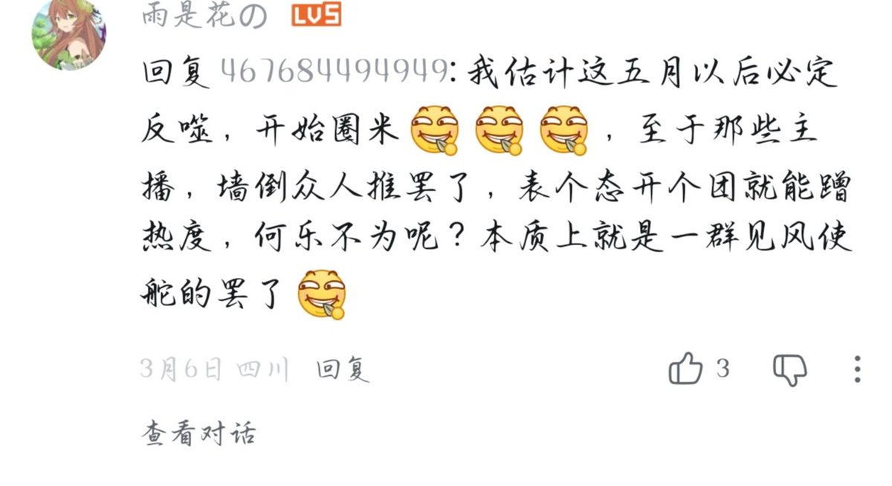

🍀🍥竹蜻蜓🍥🍀
@zqtlovekris99
@Rococo90933671 🤔他用流量圈钱又有什么不可以呢，被融号这事上他就是受害者，之前也有被荣浩的为什么就他火了，这就是互联网给他的流量，是好运，那为什么不能拿来圈钱？你们又凭什么要求他是完美受害者

大狐帝国史官邹智萱（笔名段歌文）
@Rococo90933671
没想到，一个来自三个多月前的瓜，再一次印证了互联网的魔幻。
当初是“清雨Tpor”毁了“五月食伍”的号，然后后者维权，这两天才迎来大结局。
然而，如今“五月食伍”又有节奏了。下面这个可能就是预言家 https://t.co/AVaG0rBynB